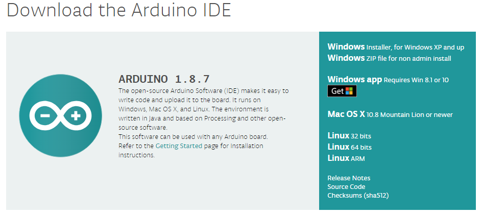
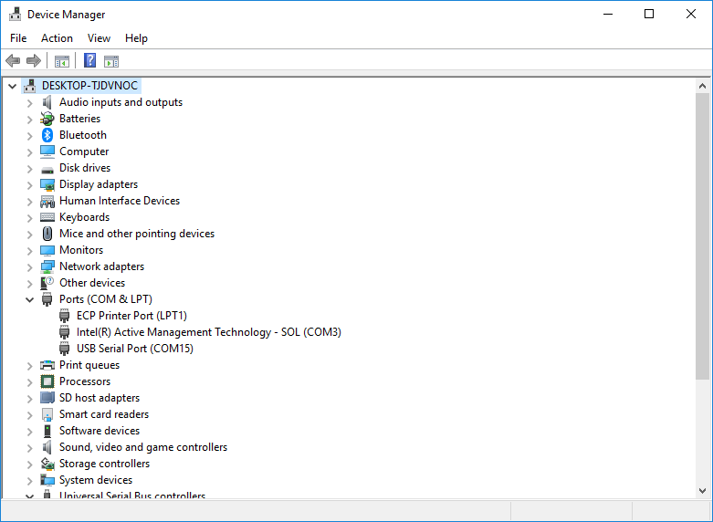
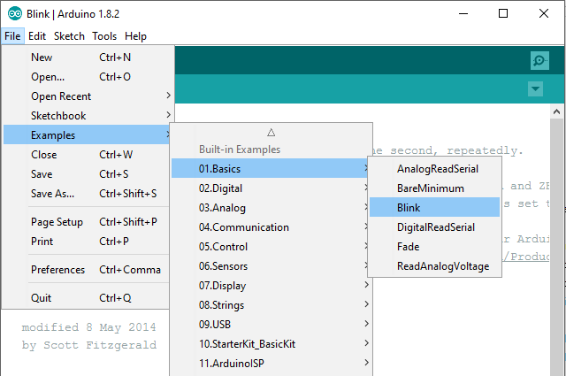
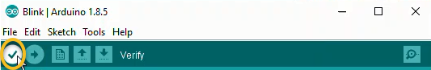
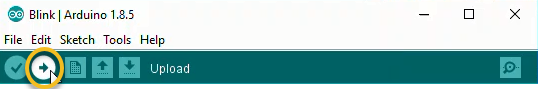

Python is used in many applications including data science, machine learning, and web development. Another area where we can use Python is external hardware control. What do I mean by external hardware? A piece of external hardware could be a light or a sensor. External hardware includes multimeters or spectral analyzers. I consider anything connected to a computer that isn't typically connected to a computer as external hardware. So not a keyboard, mouse, headphones, webcams, USB drives, but things like motors, light arrays, solenoids, linear actuators, pressure sensors, etc. In this post, we'll review over how to use Python to control an LED that is connected to an Arduino. Python running on a computer will turn the Arduino LED on and off.
- Collect the hardware
- Install PySerial
- Download the Arduino IDE
- Wire an LED and a resistor to the Arduino
- Connect the Arduino to the computer and check the COM port
- Upload the Arduino example sketch Blink.ino onto the Arduino. Confirm the Arduino and LED blinks
- Upload the Arduino example sketch PhysicalPixel.ino onto the Arduino
- Use the Arduino Serial Monitor to turn the Arduino LED on and off
- Use the Python REPL to turn the Arduino LED on and off.
- Write a Python Script to turn the LED on and off
- Write a Python script to prompt a user to turn the LED on and off
- Summary
Collect the hardware
In this project, we are going to use a couple pieces of hardware. Below is the list of harware we need to complete the project:
| Component | Item and Link |
|---|---|
| Arduino | SparkFun RedBoard - Programmed with Arduino |
| Jumper Wires | Jumper Wires Premium 6" M/M Pack of 10 |
| LED | LED Rainbow Pack - 5mm PTH |
| 330 Ohm Resistor | Resistor 330 Ohm ⅙ Watt PTH - 20 pack |
| Breadboard | Breadboard - Self-Adhesive (White) |
| USB cable | SparkFun USB Mini-B Cable - 6 Foot |
Install PySerial
To start a new Python project, it is best practice to create a new virtual environment. I have the Anaconda distribution of Python installed on my Windows 10 machine. When you install Anaconda, it comes with the very useful Anaconda Prompt. Using the Anaconda Prompt is a bit like using the terminal on a MacOS or Linux. To start the Anaconda Prompt on Windows 10, go to the Windows Start Button on the lower left and select Anaconda Prompt.

Now using the Anaconda Prompt, let's create a new virtual environment for our Arduino LED project. Note the arrow symbol > does not need to be typed. The arrow symbol > is just shown to indicate the Anaconda Prompt.
> conda create --name arduino python=3.7
The conda create command builds the new virtual environment. The --name arduino flag gives our new virtual environment the name arduino. I like to name my virtual environments the same name as the project that uses the virtual environment. Including python=3.7 ensures the new virtual environment has an up to date version of Python.
Type y to confirm and create the new virtual environment. To use the new virtual environment arduino, you need to first activate it by typing:
> conda activate arduino
You know you are in the arduino virtual environment when (arduino) is in parenthesis at the start of the Anaconda Prompt:
(arduino) >
To communicate with the Arduino using Python, we need to install the PySerial package. You can install the PySerial package at the Anaconda Prompt using the command conda install pyserial. Note the (arduino) virtual environment should be active when you run the conda install command.
(arduino) > conda install pyserial
To confirm PySerial is installed, open the Python REPL while the (arduio) virtual environment is active. At the >>> REPL prompt, import PySerial with the command import serial. Note that although we installed PySerial with the command conda install pyserial, we import PySerial using the line import serial. The command exit() exits out of the Python REPL and brings us back to the Anaconda Prompt.
(arduino) > python
>>> import serial
>>> serial.__version__
'3.4'
>>> exit()
(arduino) >
Download the Arduino IDE
The next step is to download the Arduino IDE. IDE stands for Integrated Development Environment. The Arduino IDE is a program that runs on your computer used to edit Arduino code. The Arduino IDE is also used to compile and upload code to an Arduino. We'll use the Arduino IDE to upload two different sketches to our Arduino. A sketch is the name given to Arduino programs. Arduino sketches end in the .ino file extension.
Download the Arduino IDE using the following link: https://www.arduino.cc/en/Main/Software
Scroll down the page to the Download the Arduino IDE section. Be sure to select: Windows ZIP file for non-admin install if you don't have the administrator privileges to install software on the computer you're using. You can choose JUST DOWNLOAD from the donation screen. Extract the downloaded .zip folder to your thumb drive or the desktop.

Wire an LED and a resistor to the Arduino
Take out an LED (any color), a 330 Ohm resistor, three jumper wires (red, yellow and black), the Arduino, and a white breadboard. Connect the LED, resistor, and colored jumper wires as shown below. Note the LED has two different sized "legs." Ensure the LED is wired in the correct orientation. Current can only flow in one direction through an LED.
- short LED leg → resistor → ground
- long LED leg → Pin 13 on Arduino.
Also see the SparkFun Inventor’s kit online guide:
Connect the Arduino to the computer and check the COM port
Connect the Arduino to the computer using a USB cable. On SparkFun Redboards (a type of Arduino), the cable needs to be a USB 2.0 type A to Mini-B 5-pin cable. One end of the cable looks like a regular USB cable. Connect that end to the computer. The other end of the cable has a small connector that sort of looks like a phone charging cable, but a little different. Connect this smaller end of the cable to the Arduino.
Now we need to determine which COM Port the Arduino is connected to. We will need to know which COM Port the Arduino is connected to when we upload code to the Arduino or attempt to communicate with the Arduino.
You can use the Windows Device Manager to determine which serial port the Arduino is connected to. On my Windows 10 laptop, the port the Arduino is connected to usually comes up as COM4. You can find the serial port by looking in the Ports (COM & LPT) category of the Windows Device Manager. Look for something like USB Serial Port (COM4) in the Ports (COM & LPT) menu. It is the COM# that you are looking for.

In the picture below, I can see the COM# is COM15 see Ports (COM & LPT) menu → USB Serial Port (COM15). Your COM# is likely to be different.

Upload the Arduino example sketch Blink.ino onto the Arduino. Confirm the Arduino and LED blinks
Open the extracted Arduino IDE folder and double-click the Arduino.exe program. Open the Arduino Blink.ino sketch by going to: File → Examples → 01.Basics → Blink

Now ensure that the Port and the Board type are set correctly in the Arduino IDE. In the Arduino IDE Tools menu, select the following:
- Tools → Port → COM4 (or whichever port the Arduino is connected to, found with the Windows Device Manager)
- Tools → Board → Arduino / Genuino Uno
In the Arduino IDE Window that contains the Blink.ino sketch, click the check mark to Verify then click the arrow to Upload.


Once the upload is complete, the Arduino and LED should blink on and off. If you don't see the Arduino and LED blinking, you need to do some troubleshooting. Check the COM Port or try unplugging and re-plugging in the Arduino. Also check the wiring. Ensure the two LED "legs" are wired correctly.
Upload the Arduino example sketch PhysicalPixel.ino onto the Arduino
Open the Arduino sketch PhysicalPixel.ino by going to File → Examples → 04.Communication → PhysicalPixel
Once again, click the check mark to Verify then click the arrow to Upload.
Use the Arduino Serial Monitor to turn the Arduino LED on and off
In the Arduino IDE Window that contains the PhysicalPixel.ino sketch, open the Arduino Serial Monitor by going to Tools → Serial Monitor

In the Arduino Serial Monitor type: H and click Send (or press ENTER). Then type: L and click Send (or press ENTER). The letters H and L need to be uppercase. When you click Send or press ENTER, you should see the Arduino LED turn on and off. If have trouble, make sure the Port is set correctly in Tools → Port and make sure the Serial Monitor is set to 9600 baud. You can also try unplugging and replugging in the Arduino and closing then reopening the Arduino IDE.
Use the Python REPL to turn the Arduino LED on and off.
Open the Anaconda Prompt and activate the (arduino) virtual environment (if it is not currently active). Then start the Python REPL by typing python at the prompt.
Type the following commands to turn the Arduino LED on and off. Note the arrow symbols > and >>> should not be typed. The arrow symbols > and >>> are just shown to indicate the prompt.
> conda activate arduino
(arduino) > python
Python 3.7.1 (default, Dec 10 2018, 22:54:23) [MSC v.1915 64 bit (AMD64)] :: Anaconda, Inc. on win32
Type "help", "copyright", "credits" or "license" for more information.
>>> import serial
>>> ser = serial.Serial('COM4', 9800, timeout=1)
>>> ser.write(b'H')
>>> ser.write(b'L')
>>> ser.write(b'H')
>>> ser.write(b'L')
>>> ser.close()
>>> exit()
(arduino) >
You should see the Arduino LED turn on and off when you type the commands ser.write(b'H') and ser.write(b'L'). These commands send the characters H and L over the serial line to the Arduino. The Arduino reads these characters and turns the LED on and off. Make sure you run the ser.close() command at the end. If the serial line is not closed, you may have trouble opening the serial line again and running these same commands a second time.
If you have trouble, make sure the Arduino Serial Monitor is closed before you run the commands at the Ananconda Prompt. If the Arduino Serial Monitor is open, you can't communicate with the Arduino with the Anaconda Prompt.
Write a Python Script to turn the LED on and off
Now that the Arduino LED turns on and off based on sending H and L with the Python REPL, let's write a Python script to turn the LED on and off. Again, the serial communication between the Python script and the Arduino is facilitated by the PySerial package. Ensure PySerial is installed before running the Python script.
Open a new script called arduino_blink.py. At the top of the Python script, import the PySerial package. Note that even though the package is called PySerial, the line import serial is used. Python's built-in time module is also imported as the time.sleep() function will be used in the script. Include the following code in arduino_blink.py:
# arduino_blink.py
import serial
import time
In the next part of arduino_blink.py, create a loop that blinks the LED on and off for about 5 seconds. Note the byte string b'H' is sent to the Arduino, not the unicode string 'H'. The unicode string 'H' is pre-pended with the letter b in the line ser.write(b'H'). Make sure the 'COM#' is set correctly. This 'COM#' is the COM port we found using the Windows Device Manager. It may be 'COM4', but you may have to change it to something else.
# arduino_blink.py
for i in range(10):
with serial.Serial('COM4', 9800, timeout=1) as ser:
time.sleep(0.5)
ser.write(b'H') # send the pyte string 'H'
time.sleep(0.5) # wait 0.5 seconds
ser.write(b'L') # send the byte string 'L'
Run the arduino_blink.py script. You should see the Arduino LED blink on and off 10 times.
Write a Python script to prompt a user to turn the LED on and off
Once the LED blinks on and off successfully using a for loop in a Python script, let's write a new Python script called arduino_LED_user.py that allows a user to turn the LED on and off.
Create a new file called arduino_LED_user.py. At the top of the arduino_LED_user.py script, import the PySerial package and built-in time module. Then define the serial port. Make sure to include the correct 'COM#'. Use the 'COM#' you found in the Windows Device Manager. If the 'COM#' is not set correctly, the script will not run. Include the code below in arduino_LED_user.py:
# arduino_LED_user.py
import serial
import time
# Define the serial port and baud rate.
# Ensure the 'COM#' corresponds to what was seen in the Windows Device Manager
ser = serial.Serial('COM4', 9600)
def led_on_off():
user_input = input("\n Type on / off / quit : ")
if user_input =="on":
print("LED is on...")
time.sleep(0.1)
ser.write(b'H')
led_on_off()
elif user_input =="off":
print("LED is off...")
time.sleep(0.1)
ser.write(b'L')
led_on_off()
elif user_input =="quit" or user_input == "q":
print("Program Exiting")
time.sleep(0.1)
ser.write(b'L')
ser.close()
else:
print("Invalid input. Type on / off / quit.")
led_on_off()
time.sleep(2) # wait for the serial connection to initialize
led_on_off()
Run the Python script arduino_LED_user.py. Type H and L and observe the Arduino LED turn on and off. Type q to end the program.
Summary
In this post, we reviewed how to control an Arduino LED with Python.
We accomplished this task in a couple steps. First, we created a virtual environment and installed the PySerial package into it. Next, we downloaded the Arduino IDE. Then we wired up an LED to an Arduino and uploaded the blink.ino sketch to the Arduino. This ensured the Arduino was worked properly. After that, we uploaded the PhysicalPixel.ino sketch to the Arduino and turned the Arduino LED on and off with the Arduino Serial Monitor. Once that was successful, we used the Python REPL and PySerial to turn the LED on and off. Finally, we constructed a Python script to turn the Arduino LED on and off based on user input.